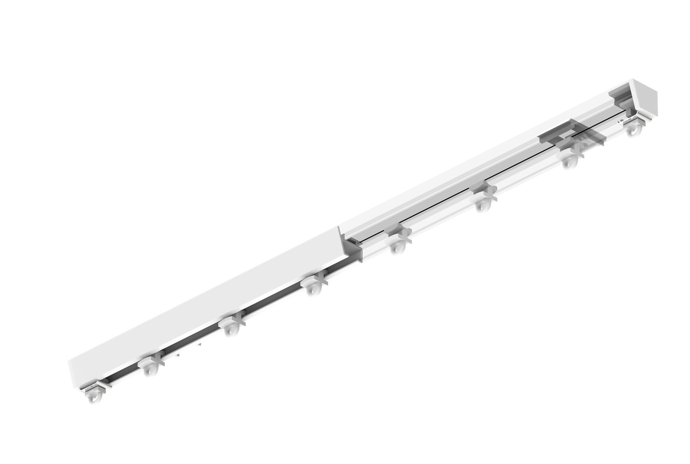
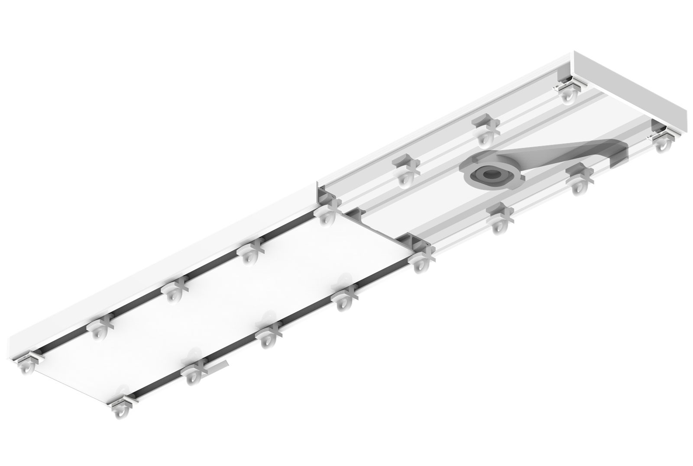
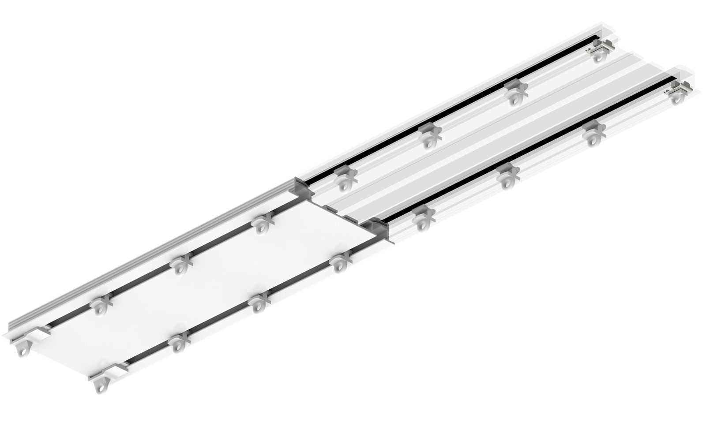
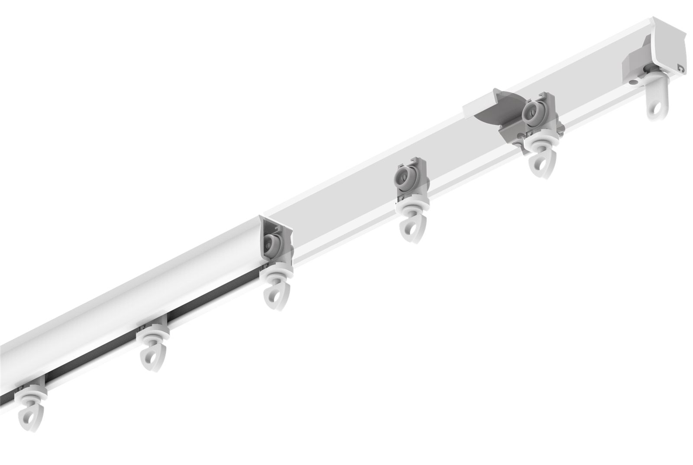
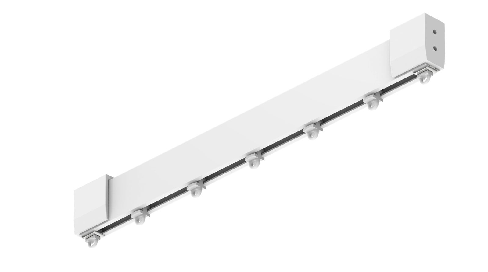

N line
Systémy se skrytými neviditelnými držáky pro stropní uchycení, ideální pro Wave (Vlna) řasení.
T line
Univerzální řada sdílející společný montážní T držák. Variabilní a vysoce přizpůsobivá.

B line
Vícekanálové kolejnice vyrobené v jednom pevném bloku. Dvou i tříkolejné provedení.

S line
Profily integrované a zapuštěné přímo do sádrokartonových podhledů.

E line
Zesílené vysokozátěžové hliníkové profily navržené pro extra zatížení.

H line
Specializované systémy pro přepažování lůžek v nemocnicích a hospicích.
Náhled se mění podle barvy, rozměru a montáže · orientační
Vyberte barvu, která se vám nejvíce líbí
Zadejte rozměr
v centimetrechZadejte prosím všechny rozměry.
Množství
Vyberte montáž
Vyberte prosím montáž — na strop, nebo na stěnu.
Cenu a přesnou specifikaci potvrdíme. Zakázková výroba ±1 mm.
Vlastnosti & materiál
Přidáno do poptávky
Ve vaší poptávce je:
- Jezdce standard z materiálu POM
- Plastové držáky
- Stop jezdce · 2 ks
- Koncovky · 2 ks
Počet jezdců a držáků dopočítáme podle délky kolejnice.